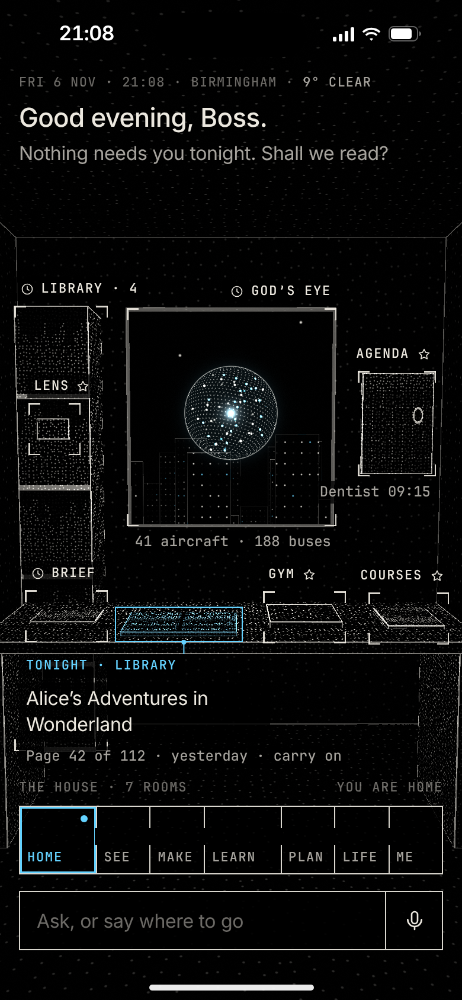
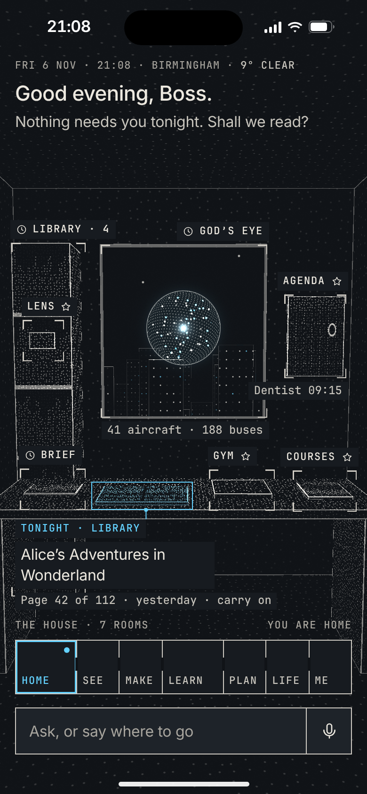

His words (6 Nov): “i don’t like how dark it looks”. Left, the room as rendered on 6 Nov; right, the same room with the design system’s surfaces, inks and lines. Nothing else changes: the scan, the marks, the type and the accent are as they were. Mean lightness of the whole screen, L*: 4.9 before, 11.6 after.

